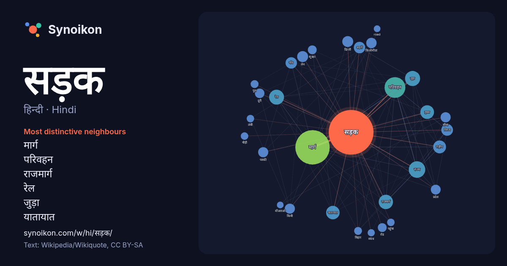

हिन्दी · Hindi · word of the day list
सड़क
“road” · The words found around it in 938 instances from Hindi Wikipedia, Wikiquote.

Most distinctive neighbours
- मार्ग 98×
- परिवहन 57×
- राजमार्ग 31×
- रेल 29×
- जुड़ा 27×
- यातायात 27×
- लेन 20×
- निगम 20×
- पक्की 18×
- शहरों 16×
- रोड 12×
- गाँव 12×
- राष्ट्रीय 11×
- किमी 11×
- दिल्ली 10×
- राज्य 10×
- चौड़ी 10×
- किलोमीटर 10×
- स्कंध 9.8×
- पुल 9.8×
× = how many times more often than in general Hindi Wikipedia text.
Most frequent neighbours
- मार्ग 208
- परिवहन 76
- भारत 48
- राज्य 48
- जुड़ा 40
- रेल 39
- स्थित 37
- राजमार्ग 36
- मुख्य 33
- यातायात 32
- राष्ट्रीय 29
- वाली 27
- निगम 24
- निर्माण 24
- प्रमुख 24
- गाँव 23
- शहरों 23
- दिल्ली 21
- लेन 21
- शहर 21
In context
- सुख के अनुसार सड़क के ज्यामितिक रूप को, स्थानीय अवस्थाओं के कारण, बदलना बहुत कठिन हो जाता है, यद्यपि वह व्यय के लिहाज से निषिद्ध न हो सड़क निर्माण में कार्य Wikipedia snippets · सड़क
- सड़क परिवहन एवं राजमार्ग मंत्रालय, भारत सरकार का एक मंत्रालय है। यह, नियमों, विनियमों और सड़क परिवहन से संबंधित कानूनों, राष्ट्रीय राजमार्गों और परिवहन Wikipedia snippets · सड़क परिवहन और राजमार्ग मन्त्रालय
- सड़क परिवहन (Road transport या road transportation) से आशय मनुष्यों या माल को सड़क से होकर (वाहनों द्वारा) ले जाना। Wikipedia snippets · सड़क परिवहन
- मुगल सड़क (Mughal Road) भारत के जम्मू और कश्मीर राज्य में एक सड़क है, जो पुंछ ज़िले की सूरनकोट तहसील में स्थित बुफ़लियाज़ बस्ती से पूर्व की ओर जाकर पीर Wikipedia snippets · मुगल सड़क
- प्रतिक्रिया पैदा कराती है कि सड़क पर रोष व्यक्त करना या आक्रामक युक्तियों और भावों के ड्राइवर के साथ कैसा व्यवहार करना है। सड़क पर रोष व्यक्त करने की निम्नलिखित Wikipedia snippets · सड़क रोष
- सड़क 1991 की हिन्दी भाषा की रोमांटिक थ्रिलर फिल्म है। इसका निर्देशन महेश भट्ट ने किया है और पूजा भट्ट और संजय दत्त प्रमुख कलाकार हैं। अभूतपूर्व संगीत के Wikipedia snippets · सड़क (फ़िल्म)
- भारत में मार्ग चिह्न ब्रिटेन में उपयोग किया जाने वाले सड़क चिह्नों जैसे हैं, लेकिन सामान्यतः वे दो या तीन भाषाओं में होते हैं। रुको (प्रमुख भारतीय भाषाओं Wikipedia snippets · भारत में सड़क संकेत
- उत्तर प्रदेश राज्य सड़क परिवहन निगम (UPSRTC) उत्तर प्रदेश राज्य की सड़क परिवहन की सरकारी कंपनी है। यह अंतर्राज्यीय एवं उ.प्र. के शहरों के बीच बस-सेवा संचालित Wikipedia snippets · उत्तर प्रदेश राज्य सड़क परिवहन निगम
More Hindi words
- इतिहास
- ईश्वर
- कार्य
- कुत्ता
- गर्मी
- गाना
- घंटी
- घड़ी
- घोड़ा
- चाय
- चित्रकला
- छाया
- जंगल
- जलवायु
- जीवन
- तूफ़ान
- दर्पण
- द्वीप
- नक्षत्र
- नमक
- परिवार
- पहाड़
- पानी
- पैसा
- प्रकृति
- बगीचा
- बिल्ली
- भाषा
- भोजन
- माता
- मानचित्र
- मृत्यु
- मौन
- रेगिस्तान
- रेलगाड़ी
- रोटी
- वर्षा
- विज्ञान
- शक्ति
- शरद
- शहद
- शहर
- सत्य
- समय
- सर्दी
- सेतु
- स्वर्ण
- स्वास्थ्य
- हृदय
Precomputed on 2026-10-09 with default settings (±5 words, medium corpus). The interactive map can refresh it with live data.